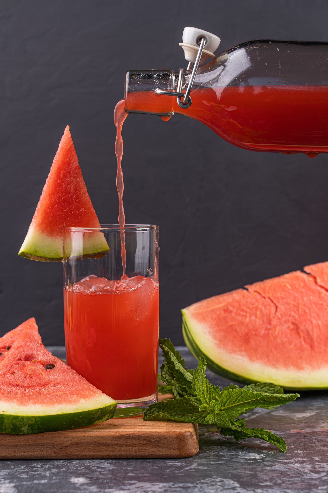
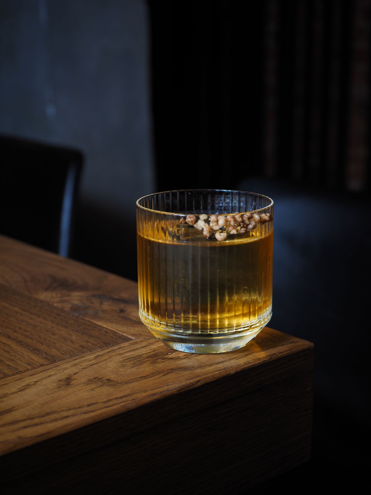
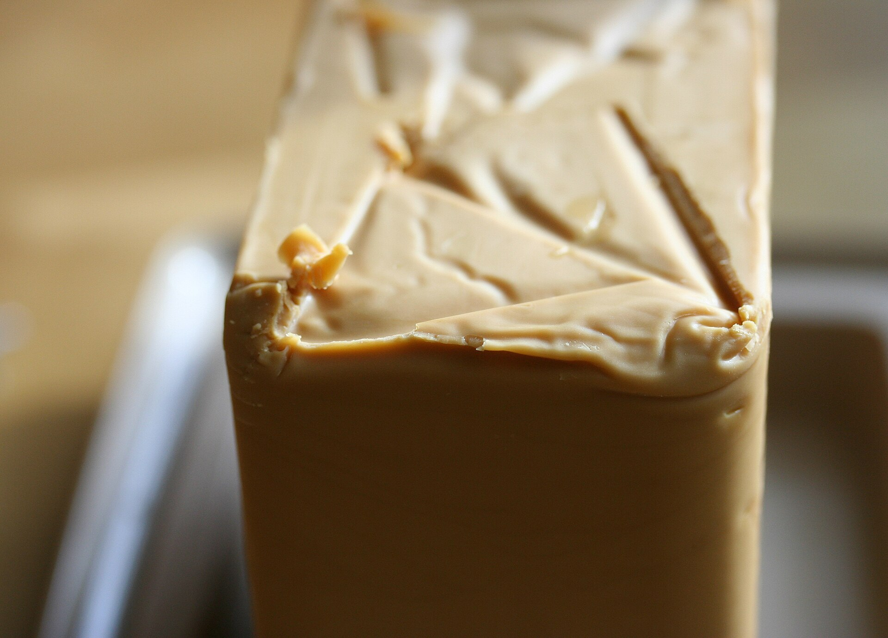
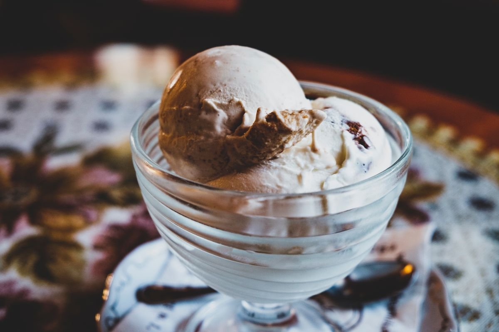

김상훈을 소개합니다
전자공학을 전공하면서 반도체를 배웠습니다. 지금은 SKALA에서 웹과 AI를 배우고 있습니다.
좋아하는 음식과 음료
-

수박 주스
날씨가 더울 때 얼음을 많이 넣어 간 수박주스를 마시는 것을 좋아합니다.
-


위스키와 브라운치즈
영화를 보면서 혼술할 때 좋아하는 조합입니다.
-

아이스크림
와일드바디를 특히 좋아합니다.
올해의 목표
- AX 엔지니어 취업 성공하기
- 서비스 만들어서 천만원 벌기
- 프리토킹할 수 있도록 영어 실력 올리기
나를 설명하는 말
- 파고드는 편입니다
- 꽂힌 건 밤새서라도 합니다. 재미없는 것도 열심히 할 필요가 있습니다.
- 기록해두는 편
- 체계적으로 정리해두는 것을 선호합니다. Agent 사용을 위해서라도 중요한 습관이라고 생각합니다.
- 다양한 것을 연결하기를 좋아합니다.
- 새로운 것을 좋아하고 다양한 분야 간의 연결고리를 찾는 것을 즐깁니다.
사진 원본과 사용 조건은 자료 출처에 기록했습니다.